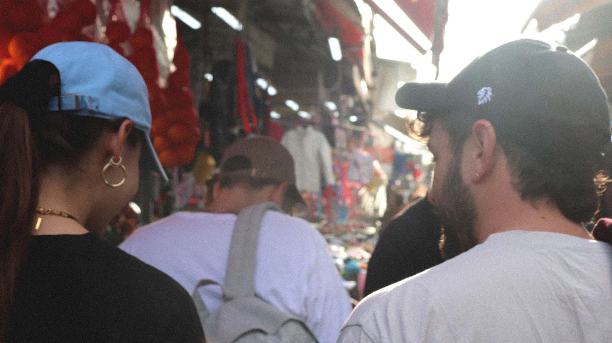
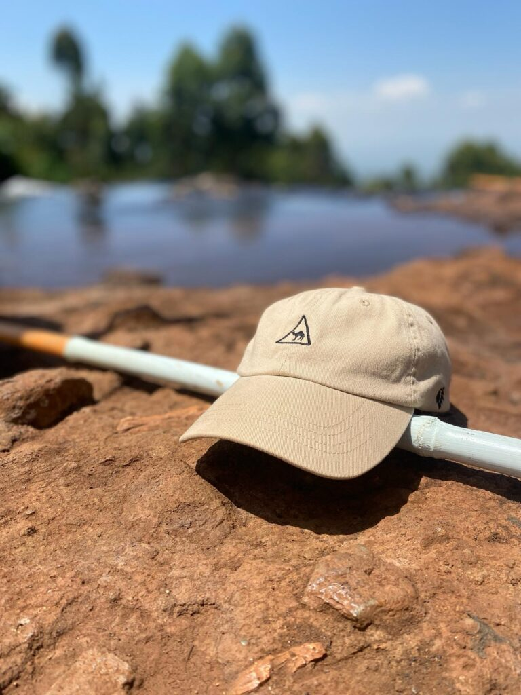

שלוש שפות עיצוביות לכתרליון
אותו תוכן בשלושה כיוונים. החליפו ביניהם בכפתורים למעלה. כל הפונטים תומכים בעברית, והתמונות והמוצרים לקוחים מהאתר. אחרי שתבחרו כיוון, הוא יוגדר כ-Global Kit באלמנטור, וכל האתר יירש אותו.

הכל מתחיל בראש
כובעים ישראליים עם אמירה, רקומים בתל אביב מאז 2016. מהקולקציה, או בעיצוב שלכם, גם כובע אחד.
לכל הכובעיםעצבו כובע משלכם
פלטת צבעים
טיפוגרפיה
כלום לא סתם
קולקציית תמרורים
כובע Dad Cap בגזרה נמוכה
כל כובע של כתרליון מתחיל ברעיון ישראלי ונגמר ברקמה מדויקת. אנחנו עובדים עם אמנים ישראליים ומייצרים כל דגם בכמויות קטנות.
עוצב ע״י האמנית מור ראסי · משלוח חינם מעל ₪249 · משלוח לחו״ל ₪150
כפתורים
הוספה לסללקופהפרטים נוספים
כרטיסי מוצר
בלי מינימום · גם כובע אחד
מה בראש שלך?
בוחרים כובע, צבע ורקמה, ואנחנו רוקמים בתל אביב. מתנה מקורית, כובע לקבוצה, או סתם כי בא לכם.
להתחיל לעצב
